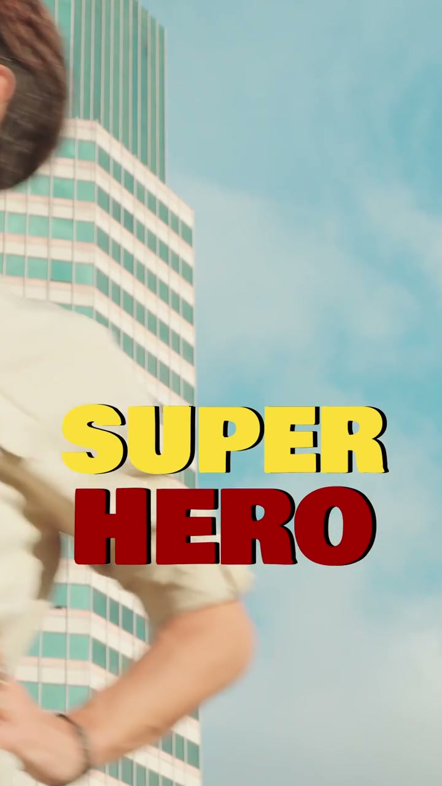
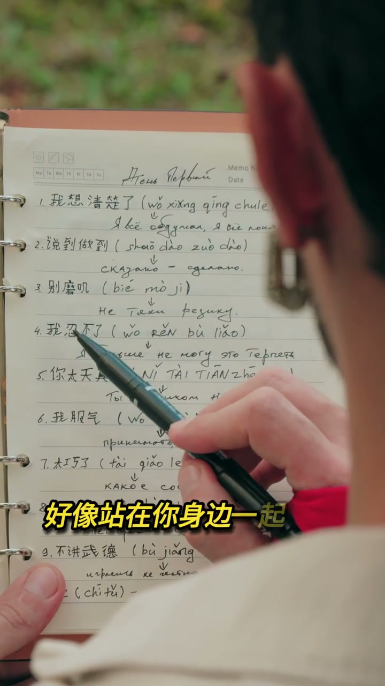

内容要点
[00:00] 這個鏡頭叫荷蘭社傾斜角度
[00:03] 會讓畫面產生情味的溫暖感和緊張感
[00:07] 讓觀眾下意識看得更專注
[00:11] 從下往上面排會讓任務看起來更強勢更仔細
[00:16] 連你的毛從這個角度看都像個Super Hero
[00:21] 從上往下面排會讓任務鮮得更柔和更乖巧
[00:26] 也能應早出情味的焦慮感和武力感
[00:33] 下一個鏡頭是火箭鏡頭
[00:36] 這個鏡頭會讓觀眾瞬間帶入
[00:39] 好像站在你身邊一起看世界
[00:43] 下一個鏡頭超特寫
[00:46] 超特寫能把任何細節 扁撐 主角
[00:50] 像是一種行人的情景感
[00:53] 也能突出動作或無極的關鍵瞬間
[00:57] 每一種鏡頭角度都有它自己的意義和情緒傳達
[01:02] 用對了你的畫面會更有故事感
[01:06] 所以 簡單
[01:08] one two
[01:09] see you around brothers and sisters

